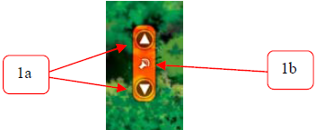

3.3 Modes of Coexistence
The tropical lowland forests in addition to exhibiting a high density and diversity of plants also exhibit a high density and diversity of animals, more than any other terrestrial ecosystem. Although information on species diversity of higher animals is almost complete, however there apparently remain many species of insects and other invertebrates not known to science. In fact, there have been a few large mammal discoveries in SE Asia within the last two decades that have surprised both the scientific community and the global community (e.g. Saola, large antlered muntjac, dark Annamite muntjac).
In addition, studies in the tropics have shown how so many animals can coexist in the same forest, primarily because different species occupy different niches, although the niches may overlap to varying degrees. These modes of coexistence (table 4) include specialization in space, diet, and breeding sites (Whitten et al., 1987; Whitmore, 1998).
Table 4: Wildlife’s modes
of coexistence
|
Specialization |
Explanation |
|
Different species of animals
are active at different times of the day, some during the day (diurnal), some
at night (nocturnal), some at dawn and dusk (crepuscular), and some with
sporadic and random intervals during the day or night (cathemeral). In addition, some species of
animals occupy all levels of the canopy while others restrict their
activities only to certain layers. |
|
|
Specialization in diet |
While most species of animals
can be grouped as omnivores, as carnivores, and as herbivores; there are
others that specializes in feeding predominantly or exclusively on leaves
only (folivores), on fruits only (frugivores), on insects only
(insectivores), on fish only (piscivores). Even those that feed on fruits and/or
leaves may further specialize in feeding immature leaves and unripe fruits,
or those plant parts that other species find toxic. Some even specializes in
feeding on dead or decaying matter (carrion-eaters or scavengers). |
|
Specialization in breeding sites |
Some species may breed in
water (some in still water and some in running water), on trees (some on
branches, in tree cavities, amongst tree roots), on and in the ground. |
The animation on co-existence of tropical wildlife allows e-Learning users to view and understand how diverse animal species can coexist in the same intact tropical lowland forest ecosystem, by developing specializations to exploit one or more ecological niches. A number of controls accompany this animation:
i. e-Learning users can scroll the animation up or down to illustrate the vertical stratification of a typical lowland forest ecosystem, and to illustrate animal species’ specialization in space (figure 9.1a).
ii. e-Learning users can also mute the background music that accompanies the animation (figure 9.1b)
|
 Figure
9.1: Controls for specialization in space and for muting the sounds |
Figure
9.2: Controls for specialization in time |
iii. By clicking on the controls for the specialization in time (figure 9.2), e-Learning users can view some of those species that are active at night (figure 9.3), by day (figure 9.4), at dawn and dusk (figure 9.5), and at sporadic and random intervals (figure 9.6).
iv. Each control for the specialization in time is accompanied by another set of controls that highlight the animal species that are active during the period of day selected.
|
Figure
9.3: Nocturnal animals |
Figure
9.4: Diurnal animals |
|
Figure
9.5: Crepuscular animals |
Figure
9.6: Cathemeral animals |
v. Upon clicking the animals illustrated for each specialization in time (figure 9.7), e-Learning users will be directed to the animal concerned, highlighted for better visibility (figure 9.8).
vi. In addition, an additional control appears near the highlighted animal urging users to click on it.
|
Figure
9.7: Controls to highlight the illustrated animals |
Figure
9.8: The highlighted animal and instruction to click |
vii. Upon clicking highlighted ‘click’ (figure 9.8), a window pops up to reveal a photographic illustration of the animal, and its specializations in time, substrate and breeding ground, and diet (figure 9.9). The pop-up window can allow e-Learning users to obtain more details of the animal by clicking on the ‘more’ control.
viii. Clicking on the ‘more’ control allows the e-Learning users to access the animal’s details from the IUCN Red List of Threatened Species database (figure 9.10). The comprehensive information include the animal’s taxonomic notes, global threatened status, geographic range and distribution map, population status, habitat and ecology, and threats to their survival.
|
Figure
9.9: Details of highlighted animal’s specializations and a tab to click for more
information |
Figure
9.10: Full details of highlighted animal at the IUCN Red List website |
| Interactive Click | |